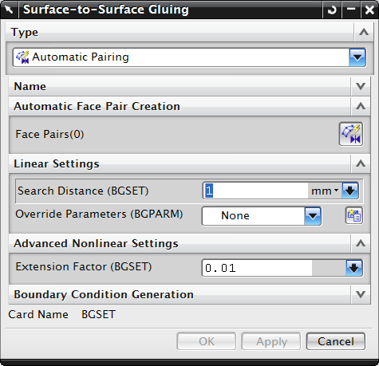

创建面对面粘合仿真对象可连接两个曲面，以防止在所有方向中产生相对运动。
要粘合两个面，您必须先定义粘您想要创建粘合单元(连接与约束曲面的刚度弹簧)的区域，区域是您期望发生粘合或接触的模型截面上的单元边或自由面的集合。这些区域可以使用壳单元以及实体单元的自由面来创建。
面对面粘合是连结两个不同网格的有效方法，所有网格都不需要变化，也不必匹配网格模式，无需添加其它单元到模型中。
面对面粘合在粘合的面之间不会产生可识别的不连续性。
可以手动指定粘合的面，也可以让软件自动确定要粘合在一起的面对：
要手动指定源面和目标面，可以选择现有的仿真区域，或者新建区域
要让软件自动确定粘合的面，可以使用自动创建面对对话框来指定软件搜索面的标准
